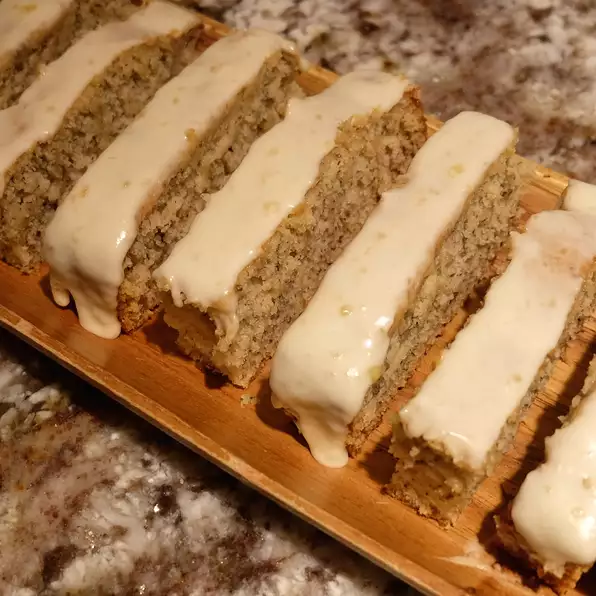

Banana Bars

Wonderful, soft banana bars with banana frosting. Yum, yum!
Ingredients
- ½ cup shortening
- 1 cup white sugar
- ½ cup milk
- 1 teaspoon vanilla extract
- 1 ½ cups all-purpose flour
Directions
- Preheat oven to 350 degrees F (175 degrees C). Grease a 9x13 inch baking pan.
- In a large bowl, cream together the shortening and sugar until smooth. Stir in the milk and 1 teaspoon vanilla. Combine the flour, baking soda and 1/2 teaspoon salt; stir into the sugar mixture. Mix in 1 banana, 1 teaspoon lemon juice and walnuts. Spread evenly into the prepared pan.
- Bake for 25 to 30 minutes in the preheated oven, until a toothpick inserted into the center comes out clean. Let bars cool in the pan on a wire rack.
- To make the frosting: In a medium bowl, mix together the melted butter, 1 teaspoon vanilla, confectioners' sugar, 1/2 banana, 1/2 teaspoon of salt and 1/4 teaspoon lemon juice using an electric mixer. Beat until smooth. Spread over cooled bars and then cut into squares.
Home Page